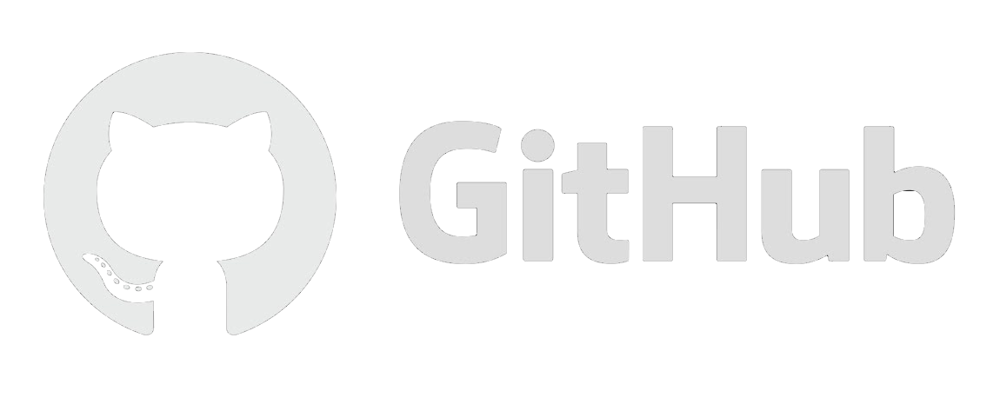
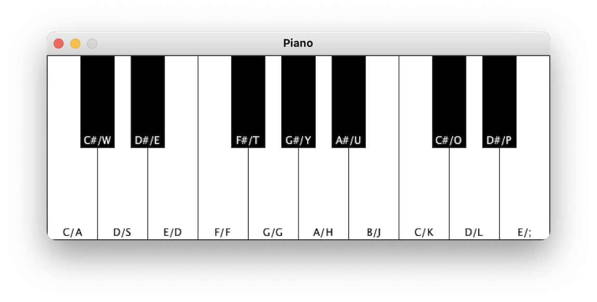
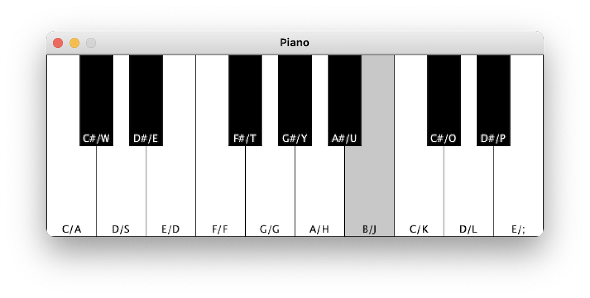

For now, most of my work is available on my university GitHub profile. Some of my personal projects are listed here with more to come as my skills improve.
This is a game that i have made as part of my programming in java university coursework. In the game you play as a spaceship pilot that has to travel through asteroid fields before facing three boss ships.
The player is able to shoot lasers by pressing the space key and move by using either the arrow keys or A/D. Sometimes, when the asteroids are shot by a players laser, they will drop a heart that restores 1 HP or a power up that lets the player fire special lasers for 5 seconds.
Additionally, by pressing the B key, the player can execute a special move that fires 7 lasers at the same time which is effective at clearing lots of asteroids.
The game has a GUI menu that is able to restart, pause and resume, skip levels, save and load and quit the game. The saving feature allows the player to save a state of the game within any of the levels and load it back whenever the choose to by clicking the load button. the saved state contains information from the time of saving so if the player was halfway through a level, that is where they will be restored to.
Below is an edited video demonstrating the games features.
This site was created by me to make it easier for me to add up my shifts worked at my job. Using this site made it much easier than adding my hours up on paper and then multiplying by specific amounts dependant on the day. It is currently used by colleagues that find it useful and is also still used by myself.
Live Demo HTML JSThis is my first university programming project, concluding the 2-week programming bootcamp. This project, written in Processing demonstrates my understanding of the use of arrays, loops and classes. I have created a digital piano that can be used by the mouse cursor or the keys on the keyboard. The keyboard is ‘built’ by using objects from a class. This means that all the keys you see are from the same code. Their positioning is done mathematically instead of manually.
 